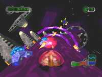

|


Review
Game Type: 3D Chase-View Shooter
You've seen this before in the form of Spy Hunter or Tempest, but never
from this perspective. Your ship clings to the outside (or inside) of an
endless tube, and the only gravity is the pull of the tube itself. You
rotate freely around the edges, blasting oncoming enemies with your
standard shot or any of several limited-ammo special weapons you pick up
along the way. Obstacles must either be jumped over or dodged around.
Gameplay: 90/100
Pure action, unhindered by anything resembling realistic physics. It's
as if Galaga was suddenly switched to a 3D perspective without adding
inertia to the control or even much gravity beyond what was needed to
bring you back down after a jump. This feels wierd at first in a polygon
game, but once you're used to it the gameplay is perfect. The control is
marvelous, and your ship always reacts instantly. It's a good thing, too...
In other games, there's always a moment when you're headed strraight
for a brick wall, and you think to yourself, "Well, this is it, I'm going
to die." That thought will repeat itself in your head so many times while
playing N-Tek that all you can do is assume a Zen-like calm and charge
straight at that titanium tower (or unbeatable mid-boss, or whatever).
Miraculously, a skilled player will always pull through somehow, and it's
an incredible feeling. At no point will you be bored while playing
this game, and very few titles can say that anymore.
Graphics: 80/100
N-Tek has all the neat frills that made Wipeout XL look so cool,
although maybe they're not applied with as much finesse. The polygon popup
horizon is quite distant but since there's nothing to obscure your view
it's also quite obvious. These are minor gripes, though, and all things
considered the graphics pull their weight almost as much as the gameplay.
Sound: 80/100
Techno soundtracks are (almost) always a good thing, and N-Tek's isn't
bad. Unfortunately it isn't astoundingly good, either. You won't even notice
the music while playing; it's just sort of there. The sound effects are
another story. The explosions have incredibly deep bass - you can feel
it when the bosses go up in smoke. But I could do without the mildly
annoying alarm that goes off when your shields are below 50% (which is
almost always the case). Sound effects and music volume can be adjusted
separately, thankfully.
Overall: 80/100
If Tempest X3 is hardcore techno, this is a Top 40 remix. Okay, so it's
totally devoid of depth. It's still a lot of fun, and shooter fans or indeed
anyone looking for a pure action game absolutely must take a look.
Codes
| Full Shield
| During a game pause and press Select, C, R, U, U, L1, L1, X.
|
| Warp Speed
| During a game pause and press C, S, C, S, T, T, T, X.
|
| Random Curving
| During a game pause and press C, Select, L, S, S, D, U, X.
|
| Semi-cockpit view
| During a game pause and press T, C, S, S, T, T, Select, Start.
|
| Change Enemy Positions
| During a game pause and press R1, R1, U, C, S, T, L2, X.
|
| Lock Camera Behind Ship
| During a game pause and press C, S, T, T, C, S, T, Start.
|
| Start With Homing Bolt
| Enter "X S T C S C X T X" as your password.
|
| Game Shark Code
| Infinite Shields (By zio): 800CAC80 1000
|
|